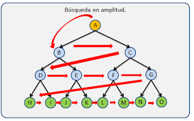
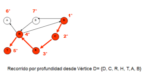

🔍 Algoritmos Fundamentales: BFS y DFS
🔵 BFS – Búsqueda en Amplitud (Breadth-First Search)
El BFS es un algoritmo que recorre un grafo nivel por nivel, explorando primero todos los nodos vecinos antes de avanzar a los siguientes.
Es ideal para encontrar la ruta más corta en grafos no ponderados.

¿Para qué sirve el algoritmo BFS?
El algoritmo BFS (Breadth-First Search) se utiliza principalmente para:
- Encontrar la ruta más corta entre dos nodos en un grafo no ponderado.
- Explorar un grafo por niveles, visitando primero los nodos más cercanos.
- Determinar si un nodo es alcanzable desde otro.
- Identificar componentes conectados en grafos no dirigidos.
- Construir árboles de expansión desde un nodo raíz.
- Resolver problemas de tipo búsqueda en amplitud, como laberintos o rutas.
🔴 DFS – Búsqueda en Profundidad (Depth-First Search)
El DFS recorre un grafo profundizando al máximo por un camino antes de retroceder.
Es útil para explorar estructuras, detectar ciclos y dividir componentes.

¿Para qué sirve DFS?
El algoritmo Depth-First Search (DFS) se utiliza para explorar un grafo
o árbol siguiendo un recorrido profundo, avanzando hasta el final de cada rama antes de retroceder.
Es útil para:
- Detectar ciclos en grafos.
- Encontrar componentes conectados.
- Resolver laberintos y problemas de rutas posibles.
- Realizar ordenamientos topológicos en grafos dirigidos acíclicos.
- Construir árboles de expansión.
🔙 Volver